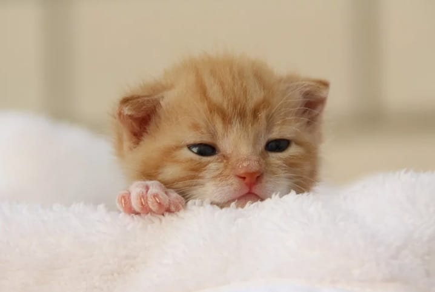
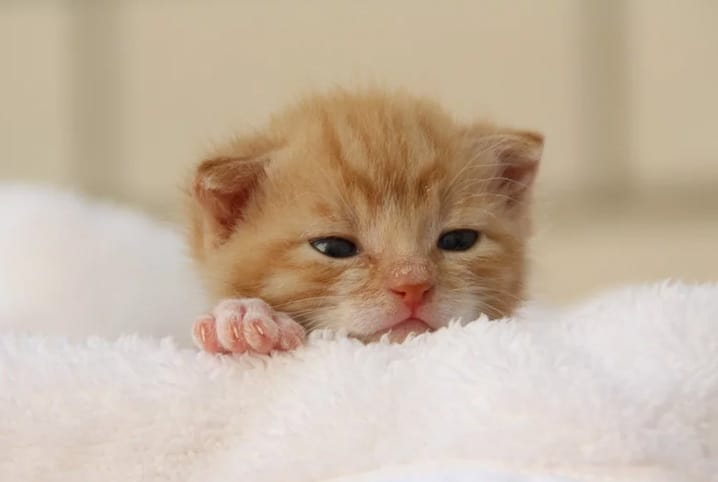

It Miu
Nossa equipe é apaixonada por gatinhos e está sempre pronta para ajudar você a escolher os melhores produtos. Também promovemos eventos e workshops sobre cuidados e adestramento de gatos.

Nossa equipe é apaixonada por gatinhos e está sempre pronta para ajudar você a escolher os melhores produtos. Também promovemos eventos e workshops sobre cuidados e adestramento de gatos.
